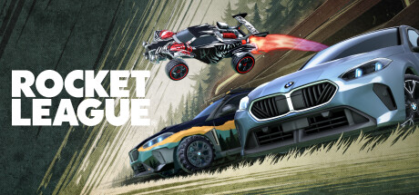

Wizard101
Click to view on Steam
Wizard101 is one of the first true MMORPGs I ever played. Released in 2008, I was one of the first players when I was just eight years old. This game enhanced my love for magic, wizards, socialization, and in-game aesthetics. It is deeply nostalgic, and to this day, I still keep up with it when I have time as the community has kept it alive!

Counter-Strike 2
Click to view on Steam
I started playing Counter-Strike in 2016 with the aim of being part of the cool kids in High School. Although they never played with me, I was determined to make the $15 worth it. From there, I built a collection of Counter-Strike skins and became a trading entrepreneur. This game has since become a meditative addiction that helps me de-stress and have fun.

Rocket League
Click to view on Steam
Rocket League is like soccer but with flying cars! Starting my undergrad, I needed a game that was short, fun, and challenging. A buddy of mine introduced me to this game in the dorm, and I racked up thousands of hours trying to improve. It only took 4 years to achieve my goal of playing ranked with my friend. Now, the soundtracks remind me of great memories.

Valheim
Click to view on Steam
Valheim is a classic survival game based on Vikings. I played this game twice with my university buddy. The retro 3D style, music, and atmosphere create a phenomenal setting for embarking on adventures late into the night. A solid game with a great difficulty curve for solo and multiplayer alike!

Hollow Knight
Click to view on Steam
Hollow Knight is a rogue-like game with a fantastic art style that I picked up during a reading week in undergrad. Going in blind, I had no idea what to expect except that I was a little bug in an unknown world. The story, narrative, and exploration in this game are fantastic. It’s a must-play despite my limited hours in it.